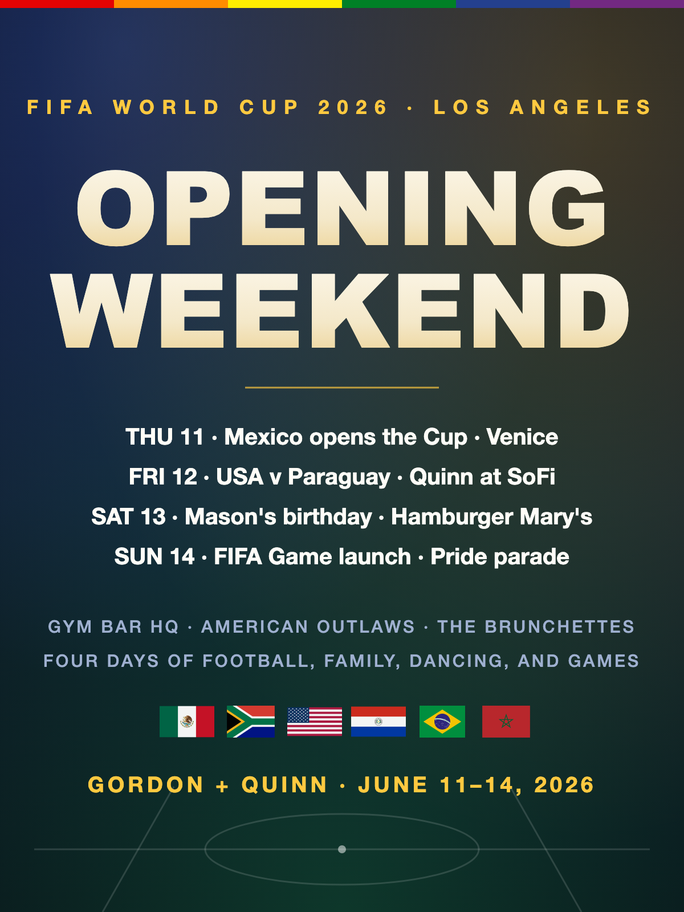

Quinn drives up from San Diego. The tournament kicks off Thursday at Estadio Azteca. Gordon and Quinn watch the Mexico opener at the US Soccer House in Venice. Friday night, Quinn is at SoFi for the USA opener. Saturday is Mason's birthday drag brunch at Hamburger Mary's. Sunday is the FIFA Game launch on Hollywood Boulevard while the LA Pride parade takes the same street. Four days of football, family, dancing, and games.
His wife Caryn passed on a trip so Quinn could afford the SoFi ticket. Send her a thank-you note. She earned this trip.
Section TBD, lifetime moment. USA vs Paraguay Friday June 12 at 6 PM PT. Gordon is not at the match.
Thursday's Mexico opener at 57 Windward Ave in Venice. Free entry, USMNT-themed, branded Bank of America activation.
Saturday June 13, the twins' actual birthday, at Hamburger Mary's WeHo, 8288 Santa Monica Blvd. Drag brunch, leg-glass mimosas, Makenna too. Show up. Bring memes.
Sunday June 14, 10 AM – 7 PM at 6021 Hollywood Blvd. FIFA Gaming Couch pop-up. Play the official FIFA World Cup game first.
Steve Aoki at the Coliseum Friday. Trinix at the Roxy Thursday. Sound, Avalon, Catch One. Tea dance at The Abbey. Gordon's playground.
Made by Darby on this Mac: flags pulled live from the web, the layout drawn from scratch, rendered locally. Send it to Quinn. Set it as the phone wallpaper for the weekend.

The reason Quinn's at SoFi at all. Don't forget the thank-you note before Quinn drives back to San Diego.
Visit the Play page to take penalty kicks, fill out Watch Party Bingo, lock in your predictions, and earn opening-weekend achievement badges. Because that's what people who built lives in games do.
All 12 opening-weekend matches with times, TV, and where to watch on Watch + Sip, every MLS player in your 12 matches (45 made squads, a league record) on MLS Watch, plus a house cocktail program built on your two palates and Gym Bar as HQ. Then the full USA v Paraguay breakdown, roster by roster, on the Dossier.